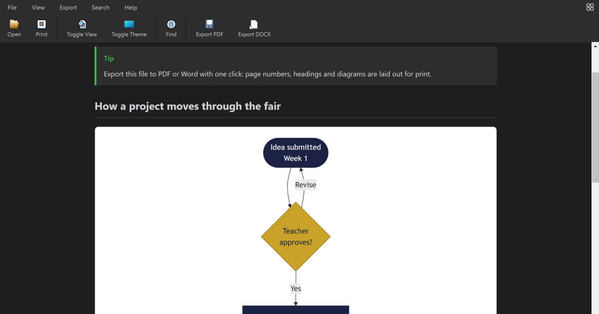
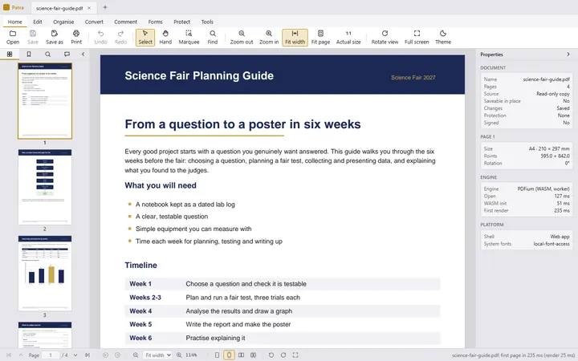
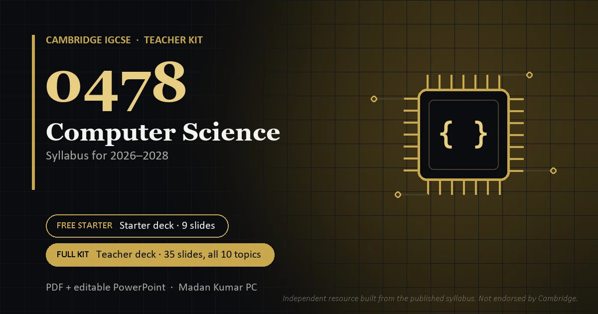
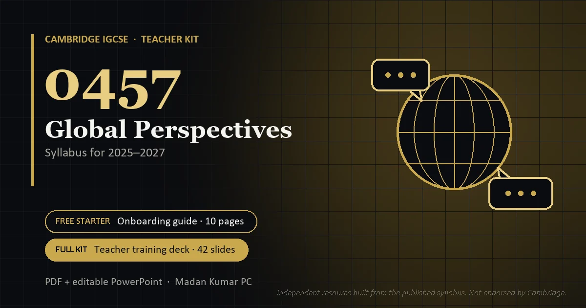
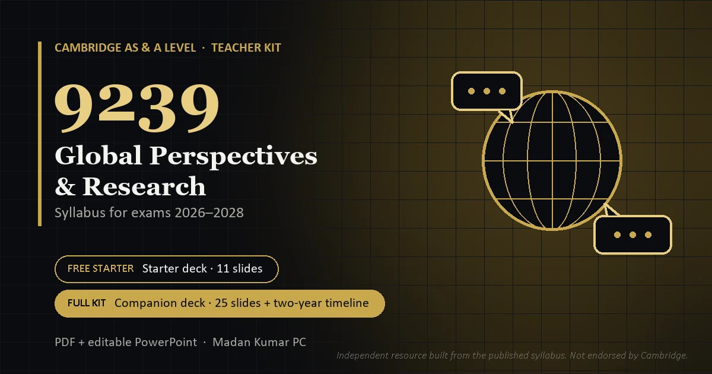
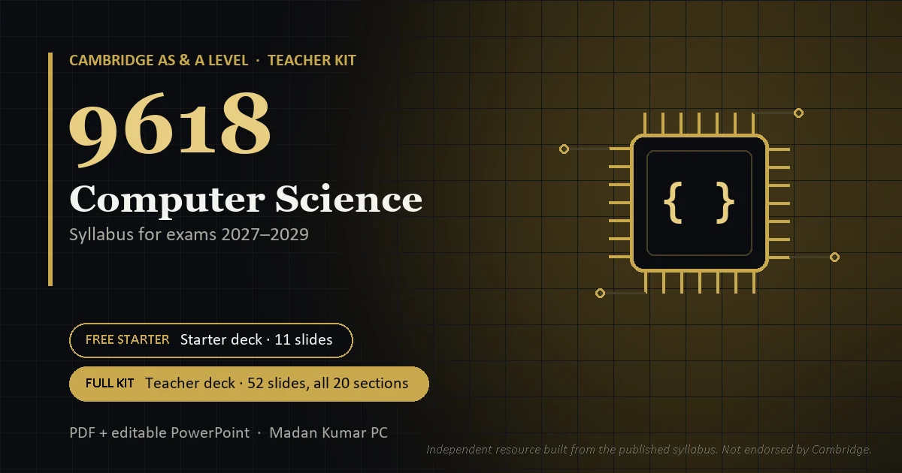

Resources & Study Materials
Teacher kits for Cambridge subjects, each with a free Starter download, plus curated resources for students.
Products
Software I build and sell — tools I use every week, polished for everyone.

Drishti — Markdown Viewer for Windows
Best for: Teachers, coordinators, students and anyone reading AI-generated notes
A fast, private Markdown viewer that draws flowcharts, maths, tables and callouts the moment you open a file, then turns it into a print-ready PDF or Word document in one click. Works offline; your files never leave your PC.

Shruti — Offline Read-Aloud for Windows
Best for: Students, teachers, busy professionals and anyone whose eyes tire of long reading on screen
Drop in a PDF, a Word file, an e-book or a scanned page, press play, and listen. Natural voices read it aloud entirely on your PC, the sentence being read is highlighted, your place is remembered, and any document can be saved as an MP3. Works offline; your files are never uploaded.

Patra — Offline PDF Editor
Best for: Teachers, exams officers and anyone who edits PDFs and wants to keep their files on their own device
A PDF editor that works entirely on your own device, on Windows and in the browser. It is being built to turn PDFs into editable Word files, save pages as images, reorganise pages and edit or add text, with no uploads, no account and no subscription.
My Resources
Teaching aids I’ve built for Cambridge subjects — ready to use in class. Each kit has a free Starter; the full kit is a one-time purchase.

IGCSE Computer Science (0478) Teacher Kit
Best for: IGCSE Computer Science (0478) teachers - Grades 9-10
For the 2026–2028 syllabus. A free 9-slide Starter Deck, plus a 35-slide Full Teacher Deck covering all ten topics. PDF and editable PowerPoint. Starter free; Full kit ₹999 or $15.

IGCSE Global Perspectives (0457) Teacher Kit
Best for: IGCSE Global Perspectives (0457) teachers - Grades 9-10
For the 2025–2027 syllabus. A free 10-page Onboarding Guide, plus a 42-slide Teacher Training deck for running a full staff training. PDF and editable PowerPoint. Guide free; Full kit ₹999 or $15.

AS & A Level Global Perspectives & Research (9239) Teacher Kit
Best for: AS & A Level Global Perspectives (9239) teachers - Grades 11-12
For exams 2026–2028. A free 11-slide Starter Deck, plus a 25-slide Companion Deck and a four-term timeline. PDF and editable PowerPoint. Starter free; Full kit ₹999 or $15.

AS & A Level Computer Science (9618) Teacher Kit
Best for: AS & A Level Computer Science (9618) teachers - Grades 11-12
For exams 2027–2029. A free 11-slide Starter Deck, plus a 52-slide Full Teacher Deck covering all 20 syllabus sections. PDF and editable PowerPoint. Starter free; Full kit ₹999 or $15.